概要
ワークフロー入力には、ワークフロー プロセスからタスクを実行するときにデータを取得するオプションがあります。これには、デジタル画像からのテキストのキャプチャ、または内蔵イメージャでキャプチャした画像からのバーコードのデコードが含まれます。
ワークフロー入力の構成内容:
- 自由形式 OCR - キャプチャした画像内のテキストを認識し、デジタル形式でテキストを抽出します。画像のキャプチャ時に、ターゲットがフレーム内に収まるようにフレームのサイズを変更できます。
- OCR Wedge - 特定の使用事例におけるテキストの自動認識とキャプチャを可能にし、そのテキストをデジタル データに変換してどのアプリケーションへでも配信することができます。具体的な使用例としては、ナンバープレート、車両識別番号 (VIN)、タイヤ識別番号 (TIN)、輸送コンテナ ID、公共設備メーター、および身分証明書があり、OCR は運転免許証および ID カードから特定の情報を抽出できます。
- イメージ キャプチャ - キャプチャする画像を色付きで強調表示することで、適切な画像がキャプチャされるようにします。イメージ キャプチャには、次の 2 つのタイプがあります。フリーフォーム イメージ キャプチャまたはドキュメント キャプチャ。
SetConfig を使用し、DataWedge プロファイルでワークフロー入力パラメータをプログラムで設定します。
ワークフロー入力 (自由形式 OCR、OCR Wedge、または画像キャプチャ) からアプリにデータや画像を取り込む方法については、『Workflow Input Programmer's Guide』を参照してください。
注: デバイスの再起動または工場出荷時リセットの後にライセンスが必要なメッセージが表示されます。デバイスの再起動または工場出荷時のリセット後に、DataWedge UI を介してワークフロー入力オプションを切り替えたりアクセスしたりすると、「ライセンスが必要です」というメッセージが表示されることがあります。これは、再起動やリセット後に Mobility DNA OCR Wedge ライセンスの初期化プロセスがまだ完了していない場合に発生します。ライセンスの初期化プロセスが完了するまでの時間が経過すると、この問題は解決します。
要件
- DataWedge バージョン 11.2 以降 (バージョンを検索)
- スキャン フレームワーク 32.0.3.6 以降 (バージョンを検索)
- SD660 プラットフォーム上の Zebra モバイル コンピュータ
- Android 11 以降
- 自由形式 OCR の場合、Zebra Professional シリーズ デバイスには Mobility DNA Enterprise ライセンスが必要です
- OCR Wedge 製品の場合:
- モバイル コンピュータの内蔵カメラ
- Mobility DNA OCR Wedge ライセンス - 各 OCR 製品に必要:
- Mobility DNA ナンバープレート OCR Wedge ライセンス
- Mobility DNA 身分証明書 OCR Wedge ライセンス
- Mobility DNA 車両識別番号 OCR Wedge ライセンス
- Mobility DNA タイヤ識別番号 OCR Wedge ライセンス
- Mobility DNA 輸送コンテナ ID OCR Wedge ライセンス
- Mobility DNA 検針 OCR Wedge ライセンス
「DataWedge ライセンス」も参照してください。
注: OCR Wedge のテストまたはデモに DWDemo を使用する場合、ライセンスは必要ありません。
自由形式 OCR
自由形式 OCR を使用すると、ドキュメントやラベルをより速く処理し、より高い精度でデータをキャプチャできます。Text Recognition v2 (ベータ版) での Google ML Kit を利用した自由形式 OCR は、キャプチャされた画像内のテキストを認識し、デジタル形式でテキストを抽出することにより、データを自動的にキャプチャします。カメラのキャプチャ時、対象領域 (ROI) のフレームがプレビュー画面に表示され、データのキャプチャ前にターゲット テキストを囲むようにフレームを調整できます。Zebra Professional シリーズ デバイスには、 Mobility DNA Enterprise ライセンスが必要です。
自由形式 OCR では、テキストを次の 3 つの部分に分割してキャプチャします。
- ブロック - 連続したテキスト行のセット (段落や列など)
- 行 - 同じ軸または行上の連続した単語のセット (テキスト行など)
- エレメント - ほとんどのラテン語では同じ軸上にある連続した英数字のセット (「単語」) 、またはその他の言語では 1 文字。
カメラからキャプチャした画像の解像度は 1920 x 1080 です。
詳しくは、『Workflow Input Programmer's Guide』の「インテントから文字列データを抽出する」をご覧ください。
自由形式 OCR を使ったデータ キャプチャのデモンストレーションビデオ
構成
自由形式 OCR パラメータ:
- 入力ソース - データをキャプチャする入力ソースを指定します。OCR に対してはカメラのみがサポートされています。
- セッション タイムアウト - タイムアウト期間を指定します。整数範囲: 0 ～ 60000 (500 刻み)、デフォルト: 15000.
- スクリプト - 読み取り対象のテキストのスクリプト言語を指定します。中国語、日本語、韓国語、デーヴァナーガリー語、および複数のラテン語系言語がサポートされています。サポートされている言語については、「サポートされている言語」をご覧ください。
- ラテン語 (デフォルト)
- ラテン語と中国語
- ラテン語と日本語
- ラテン語と韓国語
- ラテン語とサンスクリット語
- 照明 - スキャン セッション中に照明のオン/オフを切り替えます。
- 出力イメージ - 出力イメージ モードを指定します。
- 無効 - イメージを出力しません
- フル - イメージ全体を出力
- トリミング (デフォルト) - ROI (対象領域) に合わせてトリミングされます。これは、データをキャプチャする際にユーザーがプレビュー画面で調整および設定します。
- ズーム – カメラのズーム値を指定します。1 ～ 8。デフォルト値は 1 です。
- フィードバック パラメータ –
- デコード完了の音声フィードバック - デコードに成功したことを示すために再生する音をリストから選択します
- タッチ フィードバックのデコード - デコードに成功したときのデバイスのバイブレーションを有効/無効にします。Android 13 デバイスでは、 デバイスの [Settings] (設定) の [Vibration & haptics] (バイブレーションと触覚) で [Touch Feedback] (タッチ フィードバック) を有効にしないと、[Decode Haptic Feedback] (タッチ フィードバックのデコード) が機能しません。
- デコード時の LED 通知 - 有効にすると、緑色の LED が点滅し、デコードに成功したことを示します
- ビープ音量チャンネル - [デコード完了の音声フィードバック] の再生時に使用する音量設定を選択します。
- ベル音 - 音声フィードバックに [ベル音] 音量設定を使用します
- 音楽 & メディア - 音声フィードバックに音楽とメディアの音量設定を使用します
- アラーム - 音声フィードバックにアラームの音量設定を使用します
- 通知 - 音声フィードバックに通知の音量設定を使用します (デフォルト)
自由形式 OCR パラメータを設定する方法:
- DataWedge プロファイルで、[OCR] の [ワークフロー入力] および [自由形式 OCR] を有効にします。 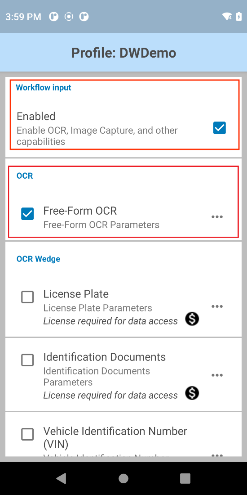
- [自由形式 OCR] の横にあるメニューアイコンをタップして、そのパラメータを開きます。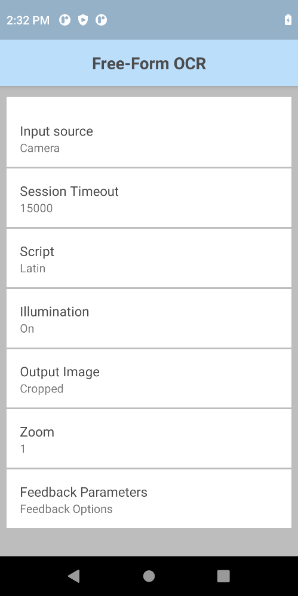
- 必要に応じて、自由形式 OCR のパラメータを選択し設定します。
- [フィードバック パラメータ] をタップします。

- 希望のフィードバック パラメータを設定します。
- オプションで、DWDemo を使用してこの機能を試すことができます。
OCR Wedge
OCR Wedge は、機械学習を使用して、微調整されたユースケース固有のモデルを有効にし、データ接続を必要とせずに Zebra Android デバイスのカメラを介してリアルタイムでデータを抽出します。サポートされている構成:
| ナンバープレート (サポートされている国/州を参照) | ||
| 身分証明書 (州、国、都道府県別にサポートされているドキュメント タイプを参照してください)。 | ||
| 車両識別番号 (VIN) | ||
| タイヤ識別番号 (TIN) | ||
| 輸送コンテナ ID | ||
| 検針 |
主な機能:
- トレーニングを受けた機械学習モデルを使用した自動テキスト データ収集
- データ収集中にユーザーをガイドするために提供される視覚的フィードバック
- キャプチャされているデータのデバイス上での処理
各構成の詳細については、以下のセクションを参照してください。詳細については、「OCR Wedge」を参照してください。
ナンバープレート
ナンバープレート OCR Wedge は、以下の特性を持つナンバープレートの自動認識を提供します。
- 対象国/地域: 米国、EU。サポート対象の州/国のリストを参照してください。
- サポートされている文字の色: 黒、緑、青、赤
- 1 行または 2 行のナンバープレート
- 幅と高さの比率が 1:1 以上のナンバープレート
- 明るい背景に暗色のテキスト
 |
||
| 米国 (ニューヨーク) および英国のナンバープレートの例 |
ナンバープレート スキャンのデモ ビデオ
パフォーマンスと動作に関する考慮事項:
- パフォーマンスは、反射、日光、異物 (汚れ、雪など)、傷などの要因に影響される可能性があります。
- ダッシュ (-) とコロン (: ) 文字はサポートされていません。
サポートされているナンバー プレート
サポートされているナンバー プレートの一覧。画像をクリックすると、サポートされているナンバー プレートの全リストが表示されます。
構成
ナンバープレート パラメータ:
- 入力ソース - データをキャプチャする入力ソースを指定します。OCR サポートのためデフォルトではカメラに設定されます。
- セッション タイムアウト - タイムアウト期間を指定します。整数範囲: 0 ～ 60000 (500 刻み)、デフォルト: 10000.
- 照明 - スキャン中に照明のオン/オフを切り替えます。
- 出力イメージ - データのデコード元となるイメージを出力します。
- フル - イメージ全体を出力 (デフォルト)
- なし - イメージを出力しません
- 領域選択 - ナンバープレートの領域に基づいてスキャン モードを選択します。「サポートされるナンバープレート」を参照してください。
- EU - 欧州のナンバープレート
- 米国 - 米国のナンバープレート
- フィードバック パラメータ:
- 音声フィードバックのデコード - デコードに成功したことを示すために再生する音をリストから選択します
- タッチ フィードバックのデコード - デコードに成功したときのデバイスのバイブレーションを有効/無効にします。Android 13 デバイスでは、 デバイスの [Settings] (設定) の [Vibration & haptics] (バイブレーションと触覚) で [Touch Feedback] (タッチ フィードバック) を有効にしないと、[Decode Haptic Feedback] (タッチ フィードバックのデコード) が機能しません。
- デコード時の LED 通知 - 有効にすると、有効にすると、緑色の LED が点滅し、デコードに成功したことを示します
- ビープ音量チャンネル - [デコード完了の音声フィードバック] の再生時に使用する音量設定を選択します。
- ベル音 - 音声フィードバックに [ベル音] 音量設定を使用します
- 音楽 & メディア - 音声フィードバックに音楽とメディアの音量設定を使用します
- アラーム - 音声フィードバックにアラームの音量設定を使用します
- 通知 - 音声フィードバックに通知の音量設定を使用します (デフォルト)
ナンバープレート パラメータを設定するには:
- DataWedge プロファイルで、OCR Wedge の [ワークフロー入力] と [ナンバー プレート] を有効にします。注: カスタム DataWedge プロファイル (DWDemo 以外のプロファイル) からアクセスするには、ナンバー プレート OCR Wedge ライセンスが必要です。

- [ナンバープレート] の横にあるメニュー アイコンをタップして、[ナンバープレート] パラメータを開きます。

- 必要に応じて、ナンバープレート パラメータを選択して設定します。
- [地域の選択] をタップして、適切な地域を選択します。
- [戻る] を 2 回タップして、[ナンバープレート] パラメータ画面に戻ります。
- [フィードバック パラメータ] をタップします。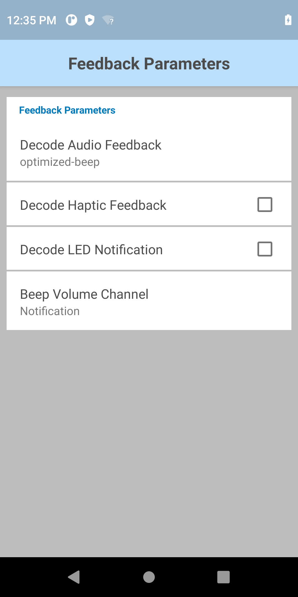
- 希望のフィードバック パラメータを設定します。
- オプションで、DWDemo を使用してこの機能を試すことができます。
身分証明書
身分証明書 OCR Wedge では、地域に応じて、異なる ID カード (国別 ID や常駐カードなど) と運転免許証を自動的に認識できます。
- 運転免許証: ヨーロッパ、米国、カナダ、オーストラリア、ニュージーランド
- 国民/居住者 ID カード: 欧州、米国、メキシコ
「サポートされている身分証明書」を参照してください。
身分証明書から取得できる個々のフィールドのリストを参照してください。
| 米国 (ペンシルバニア州) およびノルウェーの運転免許証の例 |
身分証明書のスキャンのデモ ビデオ
パフォーマンスと動作に関する考慮事項:
- パフォーマンスは、反射、照明条件、異物 (汚れ、雪など)、摩耗、背景のコントラスト不良などの要因に影響される可能性があります。
- 一部の特殊文字 (例: ñ、á) はサポートされていません。
サポートされている身分証明書
サポートされる身分証明書の一部リスト。画像をクリックすると、サポートされている身分証明書の全リストが表示されます。 
構成
身分証明書パラメータ:
- 入力ソース - データをキャプチャする入力ソースを指定します。OCR サポートのためデフォルトではカメラに設定されます。
- セッション タイムアウト - タイムアウト期間を指定します。整数範囲: 0 ～ 60000 (500 刻み)、デフォルト: 10000.
- 照明 - スキャン中に照明のオン/オフを切り替えます。
- 出力イメージ - データのデコード元となるイメージを出力します。
- フル - イメージ全体を出力 (デフォルト)
- なし - イメージを出力しません
- フィードバック パラメータ:
- 音声フィードバックのデコード - デコードに成功したことを示すために再生する音をリストから選択します
- タッチ フィードバックのデコード - デコードに成功したときのデバイスのバイブレーションを有効/無効にします。Android 13 デバイスでは、 デバイスの [Settings] (設定) の [Vibration & haptics] (バイブレーションと触覚) で [Touch Feedback] (タッチ フィードバック) を有効にしないと、[Decode Haptic Feedback] (タッチ フィードバックのデコード) が機能しません。
- デコード時の LED 通知 - 有効にすると、緑色の LED が点滅し、デコードに成功したことを示します
- ビープ音量チャンネル - [デコード完了の音声フィードバック] の再生時に使用する音量設定を選択します。
- ベル音 - 音声フィードバックに [ベル音] 音量設定を使用します
- 音楽 & メディア - 音声フィードバックに音楽とメディアの音量設定を使用します
- アラーム - 音声フィードバックにアラームの音量設定を使用します
- 通知 - 音声フィードバックに通知の音量設定を使用します (デフォルト)
身分証明書パラメータを設定するには:
- DataWedge プロファイルで、[OCR Wedge] の下の [ワークフロー入力] と [身分証明書] を有効にします。注: 身分証明書 OCR Wedge ライセンスが必要です。

- [身分証明書] の横にあるメニュー アイコンをタップして、[身分証明書] パラメータを開きます。

- 必要に応じて、身分証明書パラメータを選択して設定します。
- [フィードバック パラメータ] をタップします。
- 希望のフィードバック パラメータを設定します。
- オプションで、DWDemo を使用してこの機能を試すことができます。
車両識別番号 (VIN)
車両識別番号 (VIN) OCR Wedge は、自動車のフロントガラスや紙の文書から ISO 3779 に準拠した VIN を自動的に認識する機能を提供します。その特性は次の通りです。
- 17 文字の英数字 (アルファベットはすべて大文字) で構成されています。ただし、一部の文字は除外されます。I、O、Q
- 水平または垂直形式
 |
 |
|
| VIN のサンプル |
VIN スキャンのデモ ビデオ
パフォーマンスと動作に関する考慮事項:
- エンボス加工された低コントラストの VIN を読み取ることはできません。
- パフォーマンスは、反射、照明条件、異物 (汚れ、雪など)、摩耗などの要因に影響される可能性があります。
構成
車両識別番号パラメータ:
- 入力ソース - データをキャプチャする入力ソースを指定します。OCR サポートのためデフォルトではカメラに設定されます。
- セッション タイムアウト - タイムアウト期間を指定します。整数範囲: 0 ～ 60000 (500 刻み)、デフォルト: 10000.
- 照明 - スキャン中に照明のオン/オフを切り替えます。
- 出力イメージ - データのデコード元となるイメージを出力します。
- フル - イメージ全体を出力 (デフォルト)
- なし - イメージを出力しません
- フィードバック パラメータ:
- 音声フィードバックのデコード - デコードに成功したことを示すために再生する音をリストから選択します
- タッチ フィードバックのデコード - デコードに成功したときのデバイスのバイブレーションを有効/無効にします。Android 13 デバイスでは、 デバイスの [Settings] (設定) の [Vibration & haptics] (バイブレーションと触覚) で [Touch Feedback] (タッチ フィードバック) を有効にしないと、[Decode Haptic Feedback] (タッチ フィードバックのデコード) が機能しません。
- デコード時の LED 通知 - 有効にすると、緑色の LED が点滅し、デコードに成功したことを示します
- ビープ音量チャンネル - [デコード完了の音声フィードバック] の再生時に使用する音量設定を選択します。
- ベル音 - 音声フィードバックに [ベル音] 音量設定を使用します
- 音楽 & メディア - 音声フィードバックに音楽とメディアの音量設定を使用します
- アラーム - 音声フィードバックにアラームの音量設定を使用します
- 通知 - 音声フィードバックに通知の音量設定を使用します (デフォルト)
車両識別番号パラメータを設定するには:
- DataWedge プロファイルの OCR で [ワークフロー入力] と [車両識別番号 (VIN)] を有効にします。注: 車両識別番号 OCR Wedge ライセンスが必要です。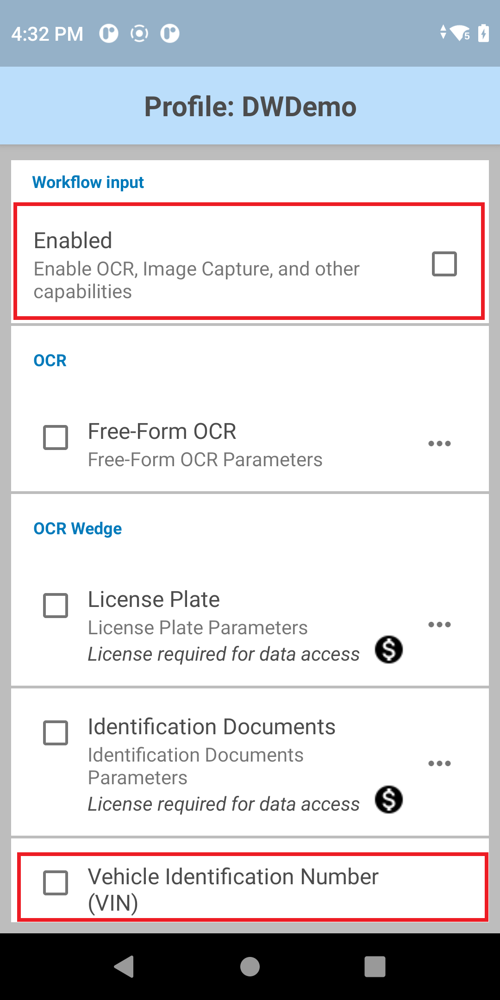
- 車両識別番号 (VIN) の横にあるメニュー アイコンをタップ して、パラメータを開きます。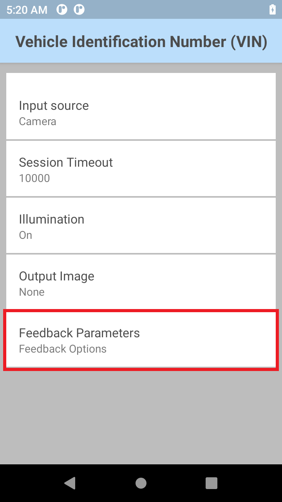
- 必要に応じて、VIN パラメータを選択して設定します。
- [フィードバック パラメータ] をタップします。
- 希望のフィードバック パラメータを設定します。
タイヤ識別番号 (TIN)
タイヤ識別番号 (TIN) OCR ウェッジは、タイヤ リムのサイドウォールの内側にある TIN を認識します。サポートされる TIN の種類には、米国運輸省 (DOT) 、商業およびタイヤサイズが含まれます。
 |
 |
|
| DOT TIN サンプル |
TIN OCR モードの要件:
| US DOT 1 | US DOT 2 | ユニバーサル * | 商用 | タイヤ サイズ | |
|---|---|---|---|---|---|
| 文字サポート | A、B、C、D、E、F、H、J、K、L、M、N、P、R、T、U、V、W、X、Y 0 ～ 9 |
A、B、C、D、E、F、H、J、K、L、M、N、P、R、T、U、V、W、X、Y 0 ～ 9 |
[A-Z0-9] | [A-Z0-9] 英字「O」を除く | [A-Z0-9/+ ] |
| 正規表現 (文字列は次の形式に従う必要があります) | N/A | N/A | N/A | [0-9A-NP-Z]{3}[0-9]{4,10}[0-9A-NP-Z]{0,1} | [A-Z0-9+ ]{0,10}[0-9]{2,3}/[0-9]{2,3} ?[A-Z][A-Z0-9+/ ]{0,15} |
| 開始文字 | 「DOT」で始まる必要があります | 「DOT」で始まる必要があります | N/A | N/A | N/A |
| 文字列の長さ | 15 ～ 16 文字 | 11 ～ 16 文字 | 最低 4 文字 | 7 ～ 14 文字 | 10 ～ 20 文字 |
| その他の要件 | 2000 年以降に製造されたタイヤのみをサポートします。 | 2000 年以降に製造されたタイヤのみをサポートします。 | N/A | N/A | N/A |
* ユニバーサル TIN は、商用とタイヤ サイズを除いて、米国 DOT 1、米国 DOT 2、および非 DOT タイヤ識別番号も読み取ることができます。
TIN スキャンのデモ ビデオ
構成
タイヤ識別番号パラメータ:
- 入力ソース - データをキャプチャする入力ソースを指定します。OCR サポートのためデフォルトではカメラに設定されます。
- セッション タイムアウト - タイムアウト期間を指定します。整数範囲: 0 ～ 60000 (500 刻み)、デフォルト: 10000.
- 照明 - スキャン中に照明のオン/オフを切り替えます。
- 出力イメージ - データのデコード元となるイメージを出力します。
- フル - イメージ全体を出力 (デフォルト)
- なし - イメージを出力しません
- TIN タイプ - TIN 読み取り用スキャン モード:
- フィードバック パラメータ:
- 音声フィードバックのデコード - デコードに成功したことを示すために再生する音をリストから選択します
- タッチ フィードバックのデコード - デコードに成功したときのデバイスのバイブレーションを有効/無効にします。Android 13 デバイスでは、 デバイスの [Settings] (設定) の [Vibration & haptics] (バイブレーションと触覚) で [Touch Feedback] (タッチ フィードバック) を有効にしないと、[Decode Haptic Feedback] (タッチ フィードバックのデコード) が機能しません。
- デコード時の LED 通知 - 有効にすると、緑色の LED が点滅し、デコードに成功したことを示します
- ビープ音量チャンネル - [デコード完了の音声フィードバック] の再生時に使用する音量設定を選択します。
- ベル音 - 音声フィードバックに [ベル音] 音量設定を使用します
- 音楽 & メディア - 音声フィードバックに音楽とメディアの音量設定を使用します
- アラーム - 音声フィードバックにアラームの音量設定を使用します
- 通知 - 音声フィードバックに通知の音量設定を使用します (デフォルト)
タイヤ識別番号 (TIN) パラメータを設定する方法。
DataWedge プロファイルで、[OCR Wedge] の [ワークフロー入力] と [タイヤ識別番号 (TIN)] を有効にします。注: タイヤ識別番号 OCR Wedge ライセンスが必要です。
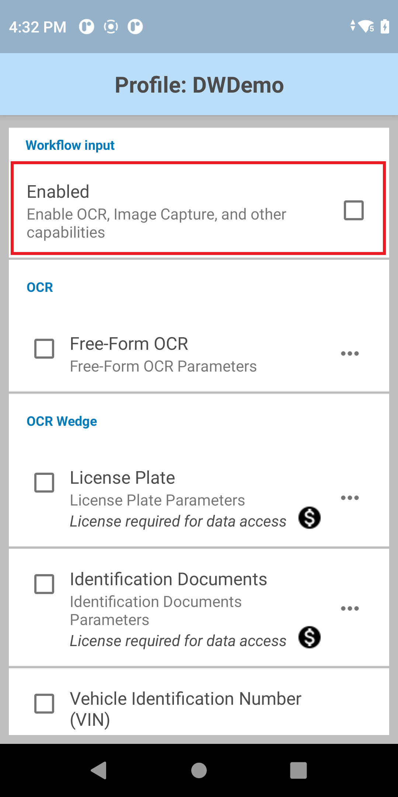 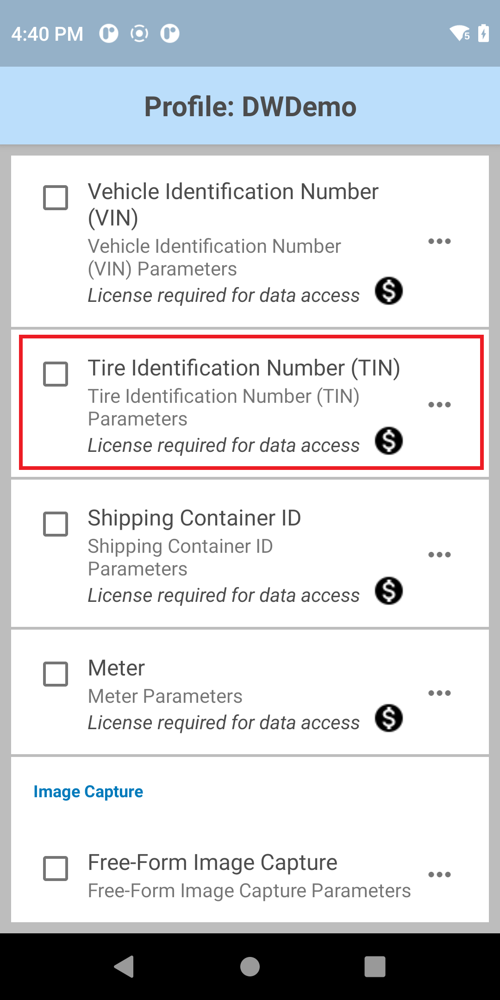 タイヤ識別番号 (TIN) の横にあるメニュー アイコンをタップして、パラメータを開きます。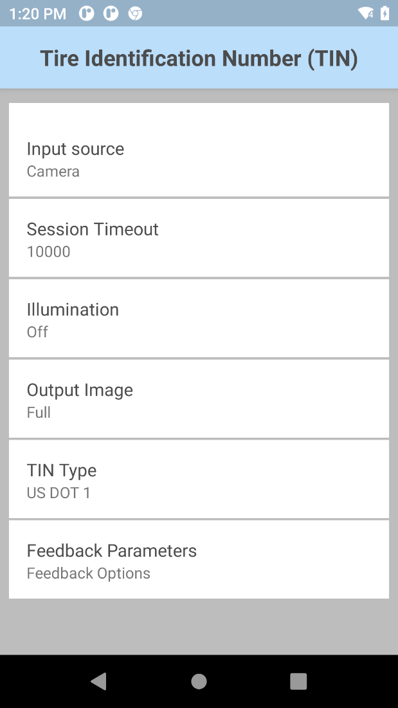
必要に応じて、TIN パラメータを選択して設定します。
[フィードバック パラメータ] をタップします。
希望のフィードバック パラメータを設定します。
オプションで、DWDemo を使用してこの機能を試すことができます。
輸送コンテナ ID
輸送コンテナ識別番号をキャプチャして、鉄道、海路、陸路を経由するサプライ チェーンを介して大量の貨物の処理と追跡を合理化します。内蔵イメージャは、至近距離からも離れた位置からも出荷用コンテナの ID 番号をすばやく正確にスキャンします。次の 2 つの主要な標準コンテナ タイプがサポートされています。
- BIC コード (ISO 6346) はチェック ディジット (水平方向および垂直方向) に準拠しています。
- ILU コード (EN 13044-1) はチェック ディジット (水平方向) に準拠しています。
 |
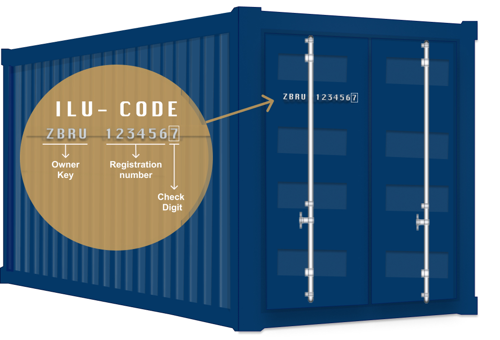 |
| 各標準コンテナ タイプの輸送コンテナ ID |
輸送コンテナ ID のキャプチャ方法を説明するビデオ
構成
輸送コンテナ ID パラメータは次のとおりです。
- 入力ソース - データをキャプチャする次の入力ソースを指定します。カメラ専用。
- セッション タイムアウト - タイムアウト期間を指定します。整数範囲: 0 ～ 60000 (500 刻み)、デフォルト: 10000.
- 照明 - スキャン セッション中に照明のオン/オフを切り替えます。
- ズーム– カメラのズーム値を最小から最大まで指定します。1 ～ 8 (デフォルト)1.
- 出力イメージ - 出力イメージ モードを指定します。
- 完全
- なし
- 向き - 次の方向タイプを選択します。
- 水平方向
- 垂直方向
- フィードバック パラメータ:
- 音声フィードバックのデコード - デコードに成功したことを示すために再生する音をリストから選択します
- タッチ フィードバックのデコード - デコードに成功したときのデバイスのバイブレーションを有効/無効にします。Android 13 デバイスでは、 デバイスの [Settings] (設定) の [Vibration & haptics] (バイブレーションと触覚) で [Touch Feedback] (タッチ フィードバック) を有効にしないと、[Decode Haptic Feedback] (タッチ フィードバックのデコード) が機能しません。
- デコード時の LED 通知 - 有効にすると、緑色の LED が点滅し、デコードに成功したことを示します
- ビープ音量チャンネル - [デコード完了の音声フィードバック] の再生時に使用する音量設定を選択します。
- ベル音 - 音声フィードバックに [ベル音] 音量設定を使用します
- 音楽 & メディア - 音声フィードバックに音楽とメディアの音量設定を使用します
- アラーム - 音声フィードバックにアラームの音量設定を使用します
- 通知 - 音声フィードバックに通知の音量設定を使用します (デフォルト)
輸送コンテナ ID パラメータを設定します。
DataWedge プロファイルで、[OCR Wedge] の [ワークフロー入力] と [輸送コンテナ ID] を有効にします。注: 輸送コンテナ ID OCR Wedge ライセンスが必要です。

[輸送コンテナ ID] の横にあるメニューをタップして、パラメータを開きます。

必要に応じて、輸送コンテナ ID パラメータを選択して設定します。
[フィードバック パラメータ] をタップします。
希望のフィードバック パラメータを設定します。
オプションで、DWDemo を使用してこの機能を試すことができます。
メーター
OCR Wedge は、ほとんどのアナログ、ダイヤル、およびデジタル検針の自動認識をサポートします。
ガス、電気、水道メーターなどの公共設備メーターを読み取り、同時に半角数字、小数点、変更値 (デジタルメーターの場合) を自動的に検出します。
フィールド サービス検針
  |
 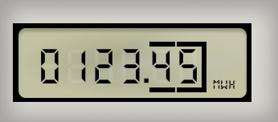 |
アナログ、ドット マトリックス (デジタル)、および電気 (デジタル) メーターのサンプル
検針のデモ ビデオ
サポートされているメーター タイプ:
- アナログ – 通常は電気、ガス、または水道メーター
- 最適なパフォーマンスには、10 進で最大 3 桁 (数値の前は 4 ～ 10桁)。
- 黒と白の背景をサポートします。
- デジタル – 通常は熱量計:
- LCD および LED ディスプレイから読み取り
- 通常、3 桁以上の 7 セグメント ディスプレイ
- ドット マトリックス表示 – 別の文字として表示されるコンマに対応する自動コンマ検出
- 10 進で最大 3 桁 (数値の前は 4 ～ 6桁) の熱量計
- ダイヤル – 通常は電気メーター
- 4 ～ 5 個の主ダイヤルと最大 1 個 (赤) の 10 進数ダイヤル (数字のラベル) をサポート
- 数値のみが返されます
- 白い背景の、黒または赤のダイヤルを読み取ります。
- ダイヤルはまっすぐ並んでいる必要はなく、ダイヤルが少しずれていても対応できます。
- 円形に配置されたダイヤルはサポートされていません。
パフォーマンスは、反射、照明条件、異物 (汚れなど)、傷などの要因に影響される可能性があります。
構成
検針パラメータ:
- 入力ソース - データをキャプチャする入力ソースを指定します。OCR サポートのためデフォルトではカメラに設定されます。
- セッション タイムアウト - タイムアウト期間を指定します。整数範囲: 0 ～ 60000 (500 刻み)、デフォルト: 10000.
- 照明 - スキャン中に照明のオン/オフを切り替えます。
- 出力イメージ - データのデコード元となるイメージを出力します。
- フル - イメージ全体を出力 (デフォルト)
- なし - イメージを出力しません
- メーター タイプ - 検針のスキャン モード:
- アナログ、デジタル、またはデジタル ドット マトリックス メーター
- ダイヤル メーター
- フィードバック パラメータ:
- 音声フィードバックのデコード - デコードに成功したことを示すために再生する音をリストから選択します
- タッチ フィードバックのデコード - デコードに成功したときのデバイスのバイブレーションを有効/無効にします。Android 13 デバイスでは、 デバイスの [Settings] (設定) の [Vibration & haptics] (バイブレーションと触覚) で [Touch Feedback] (タッチ フィードバック) を有効にしないと、[Decode Haptic Feedback] (タッチ フィードバックのデコード) が機能しません。
- デコード時の LED 通知 - 有効にすると、緑色の LED が点滅し、デコードに成功したことを示します
- ビープ音量チャンネル - [デコード完了の音声フィードバック] の再生時に使用する音量設定を選択します。
- ベル音 - 音声フィードバックに [ベル音] 音量設定を使用します
- 音楽 & メディア - 音声フィードバックに音楽とメディアの音量設定を使用します
- アラーム - 音声フィードバックにアラームの音量設定を使用します
- 通知 - 音声フィードバックに通知の音量設定を使用します (デフォルト)
メーター パラメータを設定するには:
DataWedge プロファイルで、[OCR Wedge] の [ワークフロー入力] と [メーター] を有効にします。注: 検針 OCR Wedge ライセンスが必要です。
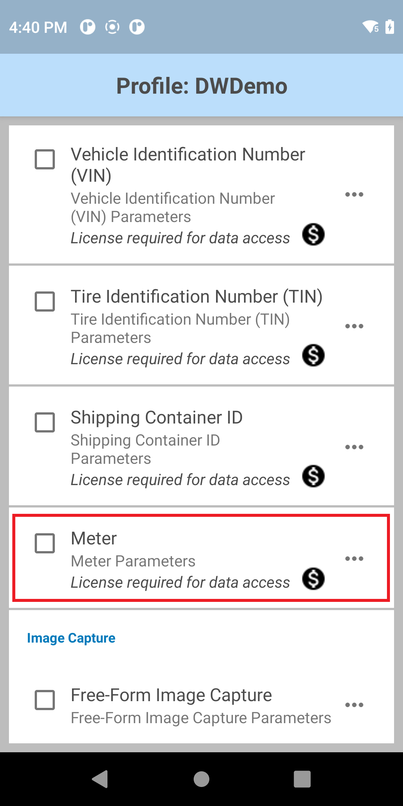 [メーター] の横にあるメニュー アイコンをタップして、[メーター] パラメータを開きます。

必要に応じて、メーター パラメータを選択して設定します。
[フィードバック パラメータ] をタップします。
希望のフィードバック パラメータを設定します。
オプションで、DWDemo を使用してこの機能を試すことができます。
イメージ キャプチャ
画像キャプチャには 2 種類があります。
それぞれの情報は、以下のセクションで説明します。
フリーフォーム イメージ キャプチャ
フリーフォーム イメージ キャプチャは、任意の形式 (ドキュメントやラベルに限定されない) のイメージを、内部イメージャやカメラのいずれでもキャプチャできる機能であり、存在するバーコードをハイライトおよび/またはデコードするオプションもあります。デバイスに内蔵カメラがない場合は、内部イメージャで画像をキャプチャする機能が便利です。カメラから画像をキャプチャする場合、画像解像度は 1920 x 1080 です。
仕組み:
- デバイスで最初にトリガを押す (ソフト ボタンまたはハード トリガ) とセッションが開始され、プレビュー フレームが表示されます。バーコードが読み取られると強調表示され、ユーザーに検出されたことが通知されます。
- 次のトリガを押すと、画像がキャプチャされてプレビューに表示されます。
- [バーコードを読み取り、強調表示] オプションが有効になっている場合、画像が返され、強調表示されているバーコードが読み取られます。
デフォルトで有効になっているデコーダ:
| シンボル体系 | 有効 | 無効 |
|---|---|---|
| Australian Postal | x | |
| AZTEC | x | |
| Canadian Postal | x | |
| Chinese 2 of 5 | x | |
| Codabar | x | |
| Code 11 | x | |
| Code 128 | x | |
| Code 39 | x | |
| Code 93 | x | |
| Composite AB | x | |
| Composite C | x | |
| Discrete 2 of 5 | x | |
| Data Matrix | x | |
| DotCode | x | |
| Dutch Postal | x | |
| EAN 128 | x | |
| EAN 13 | x | |
| EAN 8 | x | |
| Finnish Postal 4S | x | |
| Grid Matrix | x | |
| GS1 Databar | x | |
| GS1 Databar Expanded | x | |
| GS1 Databar Limited | x | |
| GS1 Datamatrix | x | |
| GS1 QRCode | x | |
| Han Xin | x | |
| Interleaved 2OF5 | x | |
| ISBT 128 | x | |
| Japanese Postal | x | |
| Korean 3OF5 | x | |
| Mailmark | x | |
| Matrix 2OF5 | x | |
| Maxicode | x | |
| Micro QR | x | |
| MicroPDF | x | |
| MSI | x | |
| PDF 417 | x | |
| QR Code | x | |
| 署名 | x | |
| TLC 39 | x | |
| Trioptic 39 | x | |
| UK Postal | x | |
| UPCA | x | |
| UPCE0 | x | |
| UPCE1 | x | |
| US Planet | x | |
| US Postnet | x | |
| US4State | x | |
| US4state FICS | x |
構成
フリーフォーム イメージ キャプチャ パラメータ:
- 入力ソース - データをキャプチャする次の入力ソースを指定します。イメージャまたはカメラ。
- セッション タイムアウト - タイムアウト期間を指定します。整数範囲: 0 ～ 60000 (500 刻み)、デフォルト: 10000.
- 照明 - スキャン中に照明のオン/オフを切り替えます。
- バーコードの読み取りと強調表示:
- オフ - 読み取りとハイライトがオフになっています
- 強調表示 - バーコードのみを強調表示します
- 読み取りとハイライト - バーコードを読み取り、強調表示します
- フィードバック パラメータ:
- 音声フィードバックのデコード - デコードに成功したことを示すために再生する音をリストから選択します
- タッチ フィードバックのデコード - デコードに成功したときのデバイスのバイブレーションを有効/無効にします。Android 13 デバイスでは、 デバイスの [Settings] (設定) の [Vibration & haptics] (バイブレーションと触覚) で [Touch Feedback] (タッチ フィードバック) を有効にしないと、[Decode Haptic Feedback] (タッチ フィードバックのデコード) が機能しません。
- デコード時の LED 通知 - 有効にすると、緑色の LED が点滅し、デコードに成功したことを示します
- ビープ音量チャンネル - [デコード完了の音声フィードバック] の再生時に使用する音量設定を選択します。
- ベル音 - 音声フィードバックに [ベル音] 音量設定を使用します
- 音楽 & メディア - 音声フィードバックに音楽とメディアの音量設定を使用します
- アラーム - 音声フィードバックにアラームの音量設定を使用します
- 通知 - 音声フィードバックに通知の音量設定を使用します (デフォルト)
フリーフォーム イメージ キャプチャを使用してイメージをキャプチャするオプションを設定します。
DataWedge プロファイルで、[イメージ キャプチャ] の下の [ワークフロー入力] および [フリーフォーム イメージ キャプチャ] を有効にします。

[フリーフォーム イメージ キャプチャ] の横にあるメニュー アイコンをタップして、パラメータを開きます。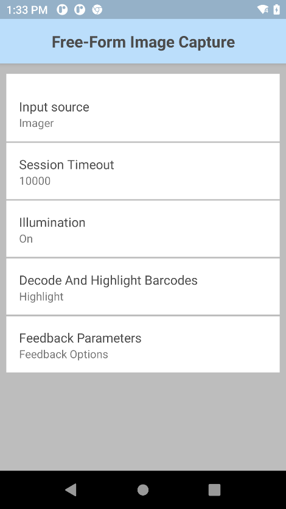
必要に応じて、[フリーフォーム イメージ キャプチャ] パラメータを選択して設定します。
[フィードバック パラメータ] をタップします。
希望のフィードバック パラメータを設定します。
オプションで、DWDemo を使用してこの機能を試すことができます。
注: 複数のバーコードからスキャンされたデータを出力するためにキーストローク出力を使用する場合、各バーコードの間にセパレータはありません。
ドキュメント キャプチャ
ドキュメント キャプチャを使用すると、カメラまたは内部イメージャでドキュメントをイメージとしてキャプチャできます。視覚的なサポートとして、ドキュメント全体またはその境界 (枠線) をプレビューで強調表示することができます。別のオプションでは、バーコードの有無を検出し、存在する場合はバーコードがデコードされます。ハード トリガを押すとドキュメントがキャプチャされます。
ドキュメント キャプチャのビデオ デモ
構成
ドキュメント キャプチャ パラメータ:
- 入力ソース - データをキャプチャする次の入力ソースを指定します。イメージャまたはカメラ。
- セッション タイムアウト - タイムアウト期間を指定します。整数範囲: 0 ～ 60000 (500 刻み)、デフォルト: 15000.
- 照明 - スキャン セッション中に照明のオン/オフを切り替えます。
- バーコードの有無 - バーコードが必要かどうかを指定します。バーコードが存在する場合は、読み取られます。
- 必須
- オプション
- ドキュメント強調表示モード - 次のいずれかのドキュメントの強調表示モードを指定します。
- 枠線のみ
- 塗りつぶし
- ドキュメントの強調表示色 - カラー ピッカーからドキュメントを強調表示する色を選択します。
- フィードバック パラメータ:
- 音声フィードバックのデコード - デコードに成功したことを示すために再生する音をリストから選択します
- タッチ フィードバックのデコード - デコードに成功したときのデバイスのバイブレーションを有効/無効にします。Android 13 デバイスでは、 デバイスの [Settings] (設定) の [Vibration & haptics] (バイブレーションと触覚) で [Touch Feedback] (タッチ フィードバック) を有効にしないと、[Decode Haptic Feedback] (タッチ フィードバックのデコード) が機能しません。
- デコード時の LED 通知 - 有効にすると、緑色の LED が点滅し、デコードに成功したことを示します
- ビープ音量チャンネル - [デコード完了の音声フィードバック] の再生時に使用する音量設定を選択します。
- ベル音 - 音声フィードバックに [ベル音] 音量設定を使用します
- 音楽 & メディア - 音声フィードバックに音楽とメディアの音量設定を使用します
- アラーム - 音声フィードバックにアラームの音量設定を使用します
- 通知 - 音声フィードバックに通知の音量設定を使用します (デフォルト)
ドキュメント キャプチャを使用してドキュメントをキャプチャするためのオプションを構成します。
DataWedge プロファイルで、[イメージ キャプチャ] の下の [ワークフロー入力] および [フリーフォーム イメージ キャプチャ] を有効にします。
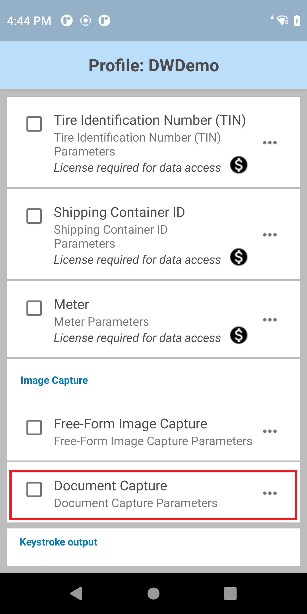 [ドキュメント キャプチャ] の横にあるメニュー アイコンをタップして、パラメータを開きます。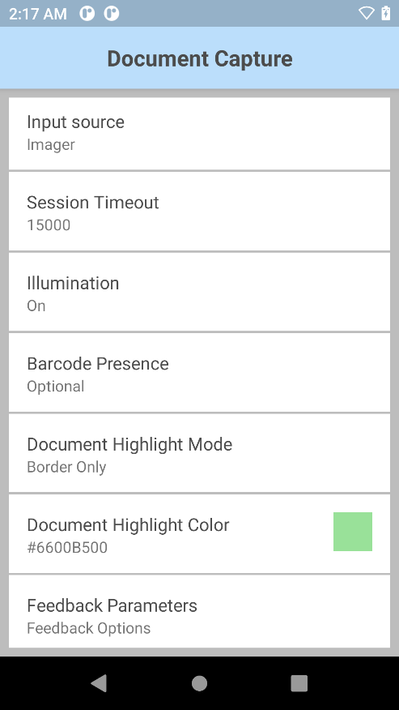
必要に応じて、[ドキュメント キャプチャ] パラメータを選択して設定します。
[フィードバック パラメータ] をタップします。
希望のフィードバック パラメータを設定します。
オプションで、DWDemo を使用してこの機能を試すことができます。
関連ガイド: